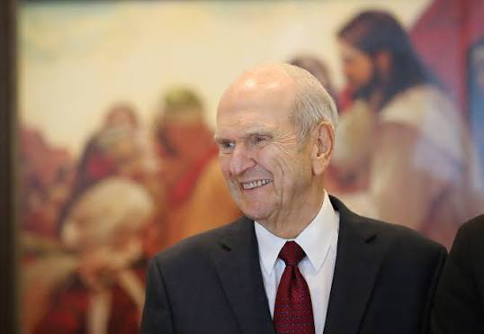

President Russell Marion Nelson Sr.
Prophet, healer, man of excellent

(Sep. 9, 1924 - Sep. 27, 2025)
But in coming days, it will not be possible to survive spiritually without the guiding, directing, comforting, and constant influence of the Holy Ghost.